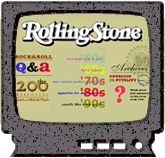
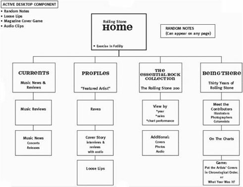
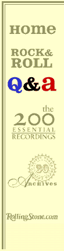
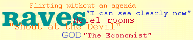
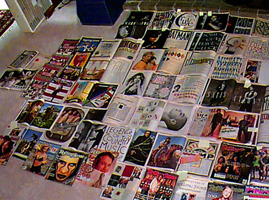

|
| ||
|
| ||
Nadja Vol Ochs
Design Consultant
Microsoft Corporation
August 1, 1997
The following article was originally published in the Site Builder Network Magazine "Site Lights" column.
|
 |
The Channel: Rolling Stone
Subscribe to the Channel: The Designers: Microgroove |
Have channels brought Web design full circle, finally catching up with the interface, navigation, and graphical design of CD-ROM and interactive television? Let's answer this question and others you may have as we walk through the evolution of the channel design for Rolling Stone, the granddaddy of U.S. print magazines covering pop music and culture.
Microgroove was chartered to create Rolling Stone's first channel. The four-person creative team had several years' experience in multimedia production, a large collection of Rolling Stone back-issues, and only 11 days to complete the channel.
"Long before we knew about this gig, say about 12 years before, one of our employees at Microgroove had been collecting Rolling Stone magazines. From the day we heard about the job, we had our hands on 12 years of back issues, right up to the current issue. Not only that, we had an inside expert on the content and aesthetic of the magazine. A great stroke of luck!"
-- Philip Coady, Microgroove
I have gathered the following design considerations from the Microgroove team. Please weigh these ideas as you begin to create your own channel. Quite a few of the considerations are similar to those you would take when building a CD-ROM title or interactive-television application.
Story boarding, even sketching on a white board, proved valuable in the channel design process. This map of the Rolling Stone channel illustrates the designers' early creative process, and how they chose to organize the content for the channel. Note that this hierarchical outline is simple and offers the user minimal choices.

A consistent, simple global navigation metaphor must be mapped out for the entire channel. In Internet Explorer 4.0, the user has the option to set the browser navigation mechanisms to Auto Hide, which allows a full-screen experience. Since the browser navigation bar, and the channel bar, can be set to Auto Hide (right-click on the browser navigation bar while in channel mode and select Auto Hide), the channel design must provide navigation for all areas of the channel. Some channel designers depend solely on the channel bar for content navigation, or to use the channel bar to highlight new features of the channel; other designers build unique navigation into their channel interface.
The Rolling Stone channel designers chose the Auto Hide option, in addition to their own custom navigation. Their goal: a navigation system that allows users to know where they are, and to feel that they could get to anywhere from anywhere within the channel.
The Rolling Stone channel maintains a consistent, high-level navigation bar throughout.
 |
The channel also uses individual navigation icons. I like the way the channel navigates: It is simple, not too many choices, and you know where you are at all times. Every icon used for navigation has unique typographical and animated graphical treatments that enhance the branded experience. The designers made a conscientious effort to keep the branding consistent by using the Rolling Stone publication's section names and a custom font. |
 | |
Various multimedia effects added to the channel provide unique user feedback by hiding and showing various images or by adding visual Direct Animation effects like transitions, warps, blurs, glows and dissolves(hyperlink to DirectAnimation samples or area). I asked the team to pick their favorite effect. Here's what they came back with:
Some channels include a passive situation: Whenever the user is not clicking on any navigation, something is in motion, or sequencing through information. This sequencing or cycling of content must always have some type of accessible, paused state, so that the user can put the motion of the content to rest and read at leisure. However, this cycling state is appropriate without the paused state if used in the screen saver. The navigation can be removed from the cycling, sequenced content (i.e., images and story headlines), which can then be used in the screen saver.
I asked Microgroove's designers about the use of motion. Answer:
"We chose to focus a good deal of our 'motion' on mouse behaviors. In this sense, it is great. I think the movement provides an unexpected and powerful reinforcement to the user that they are causing the motion. We always tried to keep the movement in the 'spirit' of the content. See Exercise in Futility's running mouse, or the Loose Lips, Raves, etc."
After their recent channel design experience, Microgroove summarized what made designing a channel different from designing a Web site.
"The most immediate difference for us as a creative shop was a further blurring of the design and development sides of the house in the conception process. We do not ask our designers to learn HTML -- we want them to be artists foremost; similarly, our developers are lucky to create a decent Bob smiley face in bit edit. BUT, with DHTML, we were ALL thinking, 'How could this animate'; or more importantly, 'How could this information appear on screen in an interesting way using Internet Explorer 4.0 technology?" Those questions opened up a new kind of collaboration for our team -- one in which the designers asked, 'Can you make this image fade in here, then have the next one appear this way,' etc., and the developers called in the designers asking, 'Is it okay if I have your image appear this way, then have this next image show like this?' We have always felt a strength at Microgroove is having the creative people envision whatever they want; then we'll try to come up with the code to fulfill that vision. The developers hate to say no!"
As Microgroove's designers on the Rolling Stone channel move ahead to final launch, they look forward to enhancing the "up-datability" through databases and Active Server Pages (ASP), while maintaining as much "hand-made design" look and feel as they can.
Here's a countdown from Microgroove of all the happenings before going live:
June 25: Project Begins (11 days until first build is due)
We have a phone conversation with the two editorial leads at Rolling Stone Online and take extensive notes on their ideas for the site.
June 26: What Will It Be? (10 days until build)
We spend the day at Microgroove brainstorming possible site maps. A conscious effort is made to include new technical possibilities in our proposal.
June 27: We Present Our Ideas (9 days until build)
We fax back to Rolling Stone our proposal for the Channel Site, Screen Saver, and Active Desktop Component. Rolling Stone likes our ideas, but wants to have the weekend to finalize section names and possible content.
June 28: Time to Start (8 days until build)
We get started on the Marilyn Manson Screen Saver. Our idea is to use DHTML to move in Reader Poll results (text) while revealing the Marilyn Manson cover. At the same time, our designers go through all 300 or so magazines, book-marking the interesting print layouts, especially those which feature typography. Soon, our office floors are covered with open magazines. The magazines stay in this state throughout the rest of the project as a source of inspiration/direction.

June 29: Names and Font (7 days until build)
On Monday morning we get the last two pieces of the puzzle from Rolling Stone: the final names of each section (we will use these to create the icons and section identities) and the custom Rolling Stone font. We decide on this day that all of the Chapter-Level screens, which are one level in from the Home Screen, will feature some sort of DHTML mouseover behavior. Given the extremely abbreviated schedule, we also suggest to Rolling Stone that we prioritize which components of the site are most critical and draft a few backup plans.
June 30 - July 7: BUILD IT!
We spend the next seven days building the site. Along the way, we post screen shots on our own Web server for Rolling Stone to review, then talk them through the functionality.
By mid-week, we are "discovering" some very cool Dynamic HTML tricks. Check out the mouseover behavior for the Loose Lips icon, where the lips jump around. We wanted to find a way to have rapid, random movement of a GIF, without using an animated GIF.
Through the use of DHTML, several screens can be very CD-ROM like in their presentation of content. See the David Byrne Q & A and the Mark Seliger Portfolio. These screens are made possible by using absolute positioning.
One of our shop specialties is typography. We were very eager to show this off by using the new Cascading Style Sheet capabilities, and experimented with various CSS implementations.
Nadja Vol Ochs is the design consultant in Microsoft's Developer Relations Group. Her comments represent her own opinions, and do not necessarily reflect the positions of Microsoft Corporation. But we like her even when she disagrees with us.
Dear Readers: Hi, It's Nadja, and I'm back again. For the next set of Site Lights articles, I'd like to shift gears from site design and discuss the latest trend in Web design: channels. Let's begin to explore channels in Internet Explorer 4.0 - Nadja Okay, so how do you prepare for the new features of the latest browsers? How can you take maximum advantage of such assets as channels and push technology? Start by learning the basics on implementing Cascading Style Sheets For technical how-to questions, check in with the Web Men Talking, MSDN Online's answer pair. from the aspects of graphic design, information architecture, and the design process. I believe that in the near future, many of you will take on designing a channel -- and you will find it different from designing a Web site in several ways. These articles will help you gain an early perspective on the latest Web technologies from designers on the forefront of channel design.
from the aspects of graphic design, information architecture, and the design process. I believe that in the near future, many of you will take on designing a channel -- and you will find it different from designing a Web site in several ways. These articles will help you gain an early perspective on the latest Web technologies from designers on the forefront of channel design.Get ready!
 -- supported by Internet Explorer 4.0
-- supported by Internet Explorer 4.0  and other browsers. Positioning and layout of all elements in HTML are dependent on understanding CSS features. Several resources come up in a search; my favorites are the Web Design Group
and other browsers. Positioning and layout of all elements in HTML are dependent on understanding CSS features. Several resources come up in a search; my favorites are the Web Design Group  and the Web Workshop's very own guide to CSS.
and the Web Workshop's very own guide to CSS.
Did you find this material useful? Gripes? Compliments? Suggestions for other articles? Write us!
© 1999 Microsoft Corporation. All rights reserved. Terms of use.